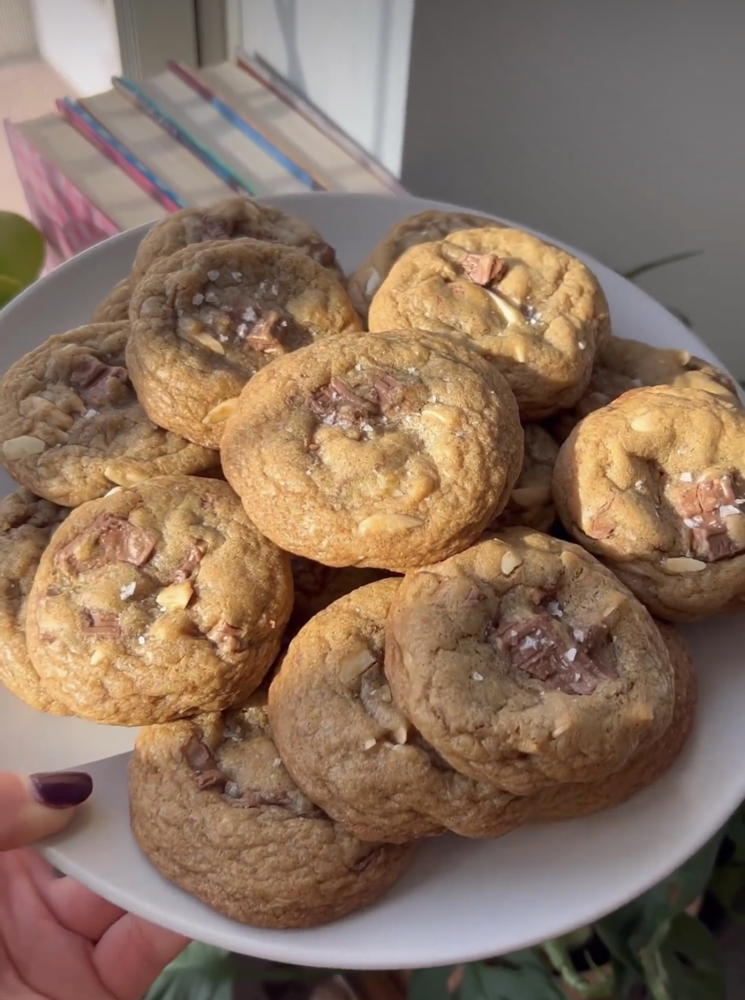

@cafehailee's Brown Butter Symphony Cookies

Hailee takes a classic and elevates it with brown butter and a symphony chocolate bar. These simple changes perfectly enhance the chocolate chip classic, with warm brown butter, toffee, and crunchy almonds, who could resist?
Ingredients
- 1 1/2 Sticks Unsalted Butter
- 1 cup Dark Brown Sugar, packed
- 2 Eggs
- 2 tsp Vanilla Bean Paste or Extract
- 1/8 tsp almond extract (optional)
- 2 cups All Purpose Flour
- 1 tsp Baking Soda
- 1 Hershey Almond Toffee Symphony Bar, roughly chopped, plus more for topping.
- 3/4 cup Slivered Almonds
- Flaky Sea Salt for topping (optional)
Instructions
- In a small pan over medium heat, add butter and melt. Once melted whisk butter continuously until the butter has browned. Keep an eye on it as this can happen quick.
- Immediately transfer to a large mixing bowl.*Let butter cool off to about room temperature.*
- Add in brown sugar amd whisk to combine. Add in eggs, one at a time, whisking to fully incorporate the egg.
- Stir in vanilla and almond extract. Set aside.
- In a small bowl, whisk flour, baking soda, and kosher salt until combined.
- Mix dry ingredients into the wet until just combined. Fold in chocolate and almonds, then let dough chill for one hour in the fridge.
- Preheat oven to 350 F. Line baking sheets with parchment paper.
- Roll dough into about 1 in. balls. If you'd like to be more precise, yo9u can weigh each cookie to 40 grams. Place a few chunks of chocolate on top of each cookie if desired.
- Space out cookies evenly on the tray
- Bake for 9-11 min. until golden on the edges, but still chewy in the middle.
- Let cool om the tray for 5 minutes, then transfer to a wire rack to cool completely.